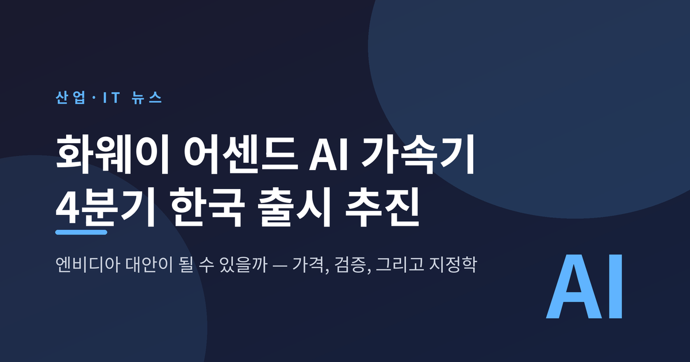
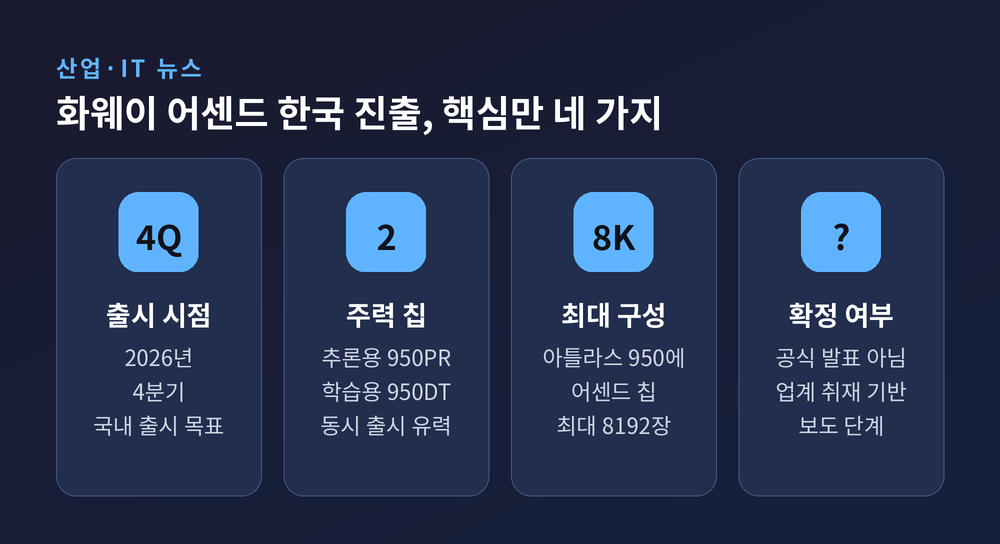
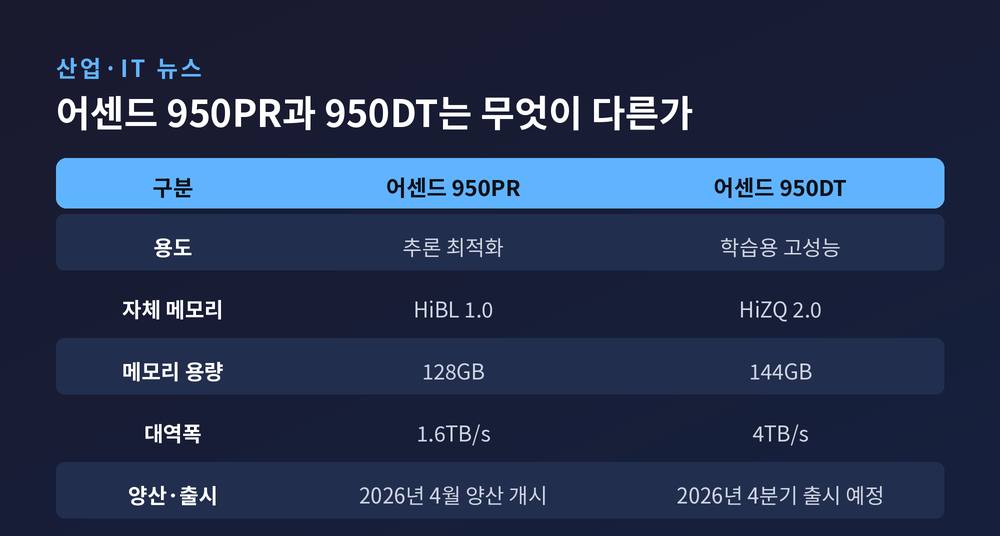
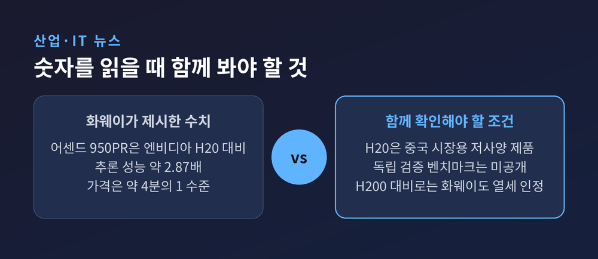
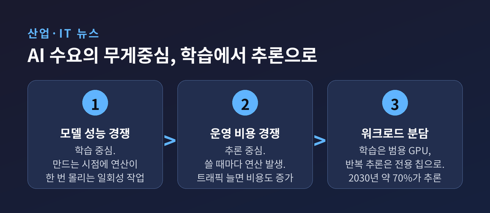
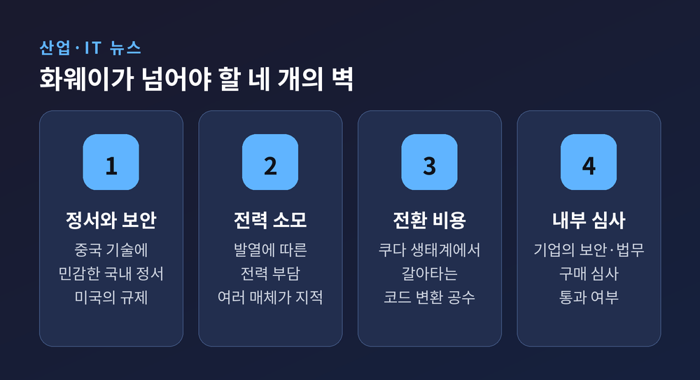
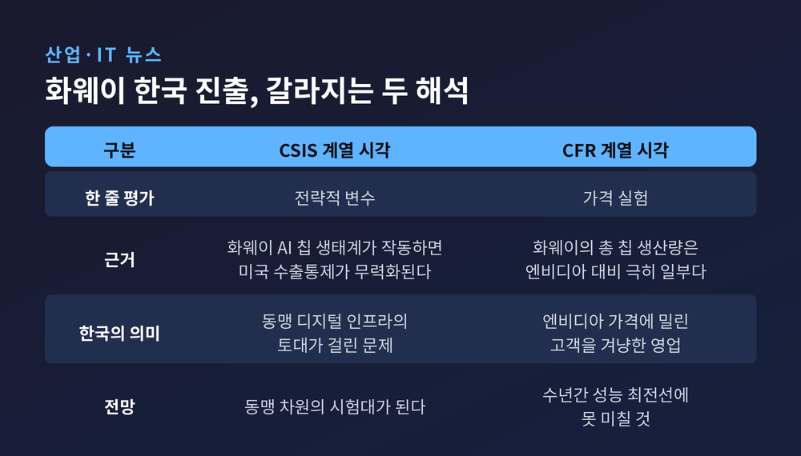

화웨이 어센드 AI 가속기, 4분기 한국 출시 추진…엔비디아 대안 될까

이번 글에서는 화웨이의 국내 AI 가속기 시장 진출 소식을 정리해 보겠습니다. 4분기 출시가 거론되는 어센드 시리즈와 아틀라스 950 슈퍼포드가 무엇이고, 이 움직임이 왜 단순한 신제품 출시로 읽히지 않는지 살펴보겠습니다.
세 줄 요약
- 화웨이가 2026년 4분기 한국에 AI 가속 칩 '어센드' 시리즈와 컴퓨팅 시스템 '아틀라스 950 슈퍼포드' 출시를 추진하는 것으로 전해졌습니다. 국내 총판 계약은 이미 마쳤습니다.
- 무기는 가격입니다. 다만 "엔비디아 H20의 2.87배 성능, 4분의 1 가격"은 화웨이가 제시한 수치이며, 독립 검증된 벤치마크는 공개되지 않았습니다.
- 관건은 성능이 아니라 보안 심사, 전력 소모, 그리고 쿠다(CUDA) 생태계에서 갈아타는 비용입니다.

4분기에 무엇이 들어오나
전자신문은 지난 7월 1일, 한국화웨이가 올해 4분기 어센드 시리즈와 아틀라스 950 슈퍼포드 출시를 목표로 영업 전략을 세우고 있다고 1면으로 보도했습니다. 국내 유통을 맡을 총판 계약을 마쳤고, 기술 교육과 가격정책 개발에도 착수한 것으로 전해졌습니다.
들어오는 물건은 칩만이 아닙니다. NPU 서버 솔루션 650E와 850E, 그리고 아틀라스 950 슈퍼포드까지 함께 소개될 예정입니다.
주력 칩은 두 종류입니다. 추론에 최적화된 어센드 950PR은 지난 4월 양산에 들어갔습니다. 학습용 고성능 모델 어센드 950DT는 4분기 출시 예정이며, 한국에서는 두 제품 동시 출시가 유력하다는 관측입니다.
공개된 사양을 보면 950PR에는 자체 메모리 HiBL 1.0이 128GB·1.6TB/s 대역폭으로, 950DT에는 HiZQ 2.0이 144GB·4TB/s로 탑재됩니다. 950PR 기반 아틀라스 350 가속카드는 FP4 기준 1.56페타플롭스, 소비전력은 600W입니다.
판매 채널로는 기존 파트너사인 SK쉴더스를 포함한 2개사가 낙점된 것으로 알려졌습니다.
다만 한 가지는 분명히 해두겠습니다. 한국화웨이는 취재 요청에 "제품 출시와 관련해 언급할 수 없다"고 답했습니다. 이 사안은 회사의 공식 발표가 아니라, 업계 취재를 근거로 한 보도 단계에 있습니다.

화웨이가 제시한 숫자, 그리고 그 숫자의 조건
화웨이가 내세우는 승부수는 가격 대비 성능입니다.
화웨이는 어센드 950PR이 엔비디아 GPU 'H20' 대비 추론 영역에서 약 2.87배 높은 연산 성능을 제공하며, 가격은 약 4분의 1 수준이라고 밝혔습니다.
이 숫자를 읽을 때 두 가지를 함께 봐야 합니다.
첫째, 이것은 화웨이가 제시한 수치입니다. 전자신문·베타뉴스·트렌드포스·UPI·톰스하드웨어 모두 이 수치를 '화웨이의 주장'으로 귀속해 전했습니다. 제3자가 독립적으로 검증한 벤치마크는 현재까지 공개되지 않았습니다. 베타뉴스는 "성능 주장에 대한 제3자 검증과 레퍼런스 확보는 화웨이코리아가 스스로 입증해야 할 몫"이라고 짚었습니다.
둘째, 비교 대상이 H20입니다. H20은 엔비디아가 미국의 수출통제에 맞춰 중국 시장용으로 성능을 낮춰 공급한 제품입니다. 엔비디아의 최상위 GPU가 아닙니다.
화웨이도 이 지점을 부정하지는 않습니다. 엔비디아 주력 GPU인 H200과 비교하면 성능이 떨어진다는 점을 인정하면서, 수천 장을 연결한 아틀라스 950 시리즈로 이를 해소할 수 있다고 강조합니다. 쉬즈쥔 화웨이 순환회장은 "단일 칩 측면에서는 엔비디아에 뒤처져 있고 단기간에 따라잡기 어렵지만, 슈퍼노드와 클러스터 측면에서는 자신이 있다"고 말한 바 있습니다.
그 클러스터가 아틀라스 950 슈퍼포드입니다. 자체 인터커넥트 '링취 2.0'을 기반으로 랙당 64개 칩을 기본 구성하고, 최대 8192개 어센드 칩을 완전연결 방식으로 묶습니다. 지난 16일 상하이 세계인공지능대회(WAIC) 개막 전날 실물이 처음 공개됐습니다. 이 자리에서도 화웨이는 엔비디아 차세대 제품 'NVL144' 대비 총 연산력 6.7배, 메모리 용량 15배라고 소개했습니다. 역시 업체 측 설명입니다.

칩이 아니라 클러스터를 판다
주목할 대목은 파는 방식입니다.
발리안 왕 화웨이코리아 CEO는 지난해 12월 서울에서 열린 '화웨이 데이 2025' 간담회에서 이렇게 말했습니다. "낱개로 칩을 판매하는 것이 아니라 클러스터 단위로 판매할 계획입니다." 네트워크와 스토리지까지 집성된 점이 독특한 경쟁력이 될 수 있다는 설명이었습니다.
칩·네트워크·스토리지를 한 묶음으로 공급하고 운용까지 아우르는 엔드투엔드 방식입니다. 인프라 구축 경험이 부족한 기업도 통째로 도입할 수 있게 하겠다는 구상입니다.
전자신문은 이 전략이 13년 전과 닮았다고 분석했습니다. 화웨이는 2013년 전후 LTE 망 구축이 본격화되던 시기에 한국 통신 장비 시장을 공략했습니다. 당시 시장은 에릭슨·노키아·삼성전자가 주도하고 있었습니다. 화웨이는 선두주자보다 저렴한 장비를 전면에 내세웠고, LG유플러스가 선제적으로 채택했습니다. 총소유비용을 낮추려는 시도였습니다. 보안 우려가 있었지만 차별화를 택한 것입니다.
물론 묶음 판매에는 그림자도 있습니다. 클러스터 단위로 들어가면 고객사의 화웨이 의존도가 높아져 이른바 '락인' 효과가 생길 수 있다는 지적이 나옵니다.
왜 지금인가 — 학습에서 추론으로
시기도 우연은 아닙니다.
엔비디아는 AI 가속기 시장의 80~90%를 쥐고 있습니다. 제품은 고가이고 수급도 쉽지 않습니다. 예전엔 GPU를 얼마나 잘 쓰느냐가 문제였습니다. 지금은 GPU를 확보할 수 있느냐, 그 값을 감당할 수 있느냐가 문제입니다.
동시에 AI 수요의 무게중심이 옮겨가고 있습니다. 학습은 모델을 만드는 시점에 연산이 한 번 몰리는 일회성 작업에 가깝습니다. 추론은 다릅니다. 사용자가 서비스를 쓸 때마다 연산이 끊임없이 발생합니다. 트래픽이 늘면 비용도 그만큼 늘어납니다. 추론 단가를 낮추지 못하면 성장이 곧 적자가 되는 구조입니다.
백준호 퓨리오사AI 대표는 지난 4월 '레니게이드 2026 서밋'에서 2030년까지 구축될 AI 데이터센터의 약 70%가 추론 영역에 집중될 것이라고 내다봤습니다.
어센드 950PR이 '추론 특화'로 먼저 나오고 학습용 950DT가 뒤따르는 구성은, 이 흐름과 정확히 겹칩니다.

넘어야 할 벽
그럼에도 안착까지는 갈 길이 멉니다. 여러 매체가 공통으로 짚는 벽이 있습니다.
첫째, 정서와 보안입니다. 중국 기술·제품 도입에 민감한 국내 정서는 여전합니다. LG유플러스는 5G 구축 과정에서 화웨이 장비를 도입하며 수년간 보안 논란의 중심에 섰습니다. 미국은 화웨이를 국가안보 위험 기업으로 규정해 왔고, 상무부 산업안보국은 어센드 시리즈가 수출통제 규정을 위반할 소지가 있다는 취지의 지침을 낸 바 있습니다. 화웨이는 백도어 의혹을 일관되게 부인하며 정치적 이유로 부당한 제재를 받고 있다는 입장입니다. 양쪽 주장이 평행선을 달리고 있는 셈입니다.
둘째, 전력입니다. 발열에 따른 전력 소모 문제는 전자신문·트렌드포스·UPI가 나란히 지적한 약점입니다. 가격이 싸도 운영비에서 되돌려주면 의미가 옅어집니다.
셋째, 전환 비용입니다. GPU의 진짜 강점은 "아무 모델이나 돌아간다"가 아닙니다. 쿠다를 중심으로 파이토치·텐서플로우 생태계가 공고해서, 모델을 바꿔도 기존 코드와 도구를 거의 그대로 쓸 수 있다는 점입니다. 화웨이는 자체 소프트웨어 스택으로 쿠다 호환성을 개선했다고 주장하지만, 이 역시 검증은 남아 있습니다.
넷째, 심사입니다. 한 AI 가속기 기업 관계자는 "보안·법무·구매 심사 장벽을 어떻게 넘어설지가 관건인 만큼 당장 주류로 자리 잡지는 않을 것"이라고 전망했습니다.

국산 NPU가 놓인 자리
이 소식이 가장 무겁게 닿는 곳은 어쩌면 국산 NPU 업계입니다.
전자신문은 화웨이 진출이 국내 AI 가속기 업계에 위기로 작용할 가능성이 크다고 봤습니다. 이유는 단순합니다. 겨냥하는 시장이 겹치기 때문입니다. 리벨리온과 퓨리오사AI 같은 기업은 엔비디아가 차지하지 않은 틈새를 파고들어야 하는데, 그 틈새에서 화웨이와 마주치게 됐습니다. 대규모 공급 능력과 소프트웨어 역량을 갖춘 상대를, 스타트업이 대부분인 국내 업계가 감당하기는 쉽지 않다는 우려가 나옵니다.
국산 진영도 손을 놓고 있지는 않습니다. 퓨리오사AI는 2세대 추론 칩 '레니게이드'의 생산 물량을 내년까지 4만~5만장으로 늘릴 계획입니다. 올해 2만장의 두 배가 넘습니다. 리벨리온은 데이터센터에 바로 배치할 수 있는 랙·포드 단위 인프라를 공개했습니다. 삼성SDS는 하반기 퓨리오사AI 칩 기반 NPU 임대 서비스를, KT클라우드와 가비아는 리벨리온 칩 기반 서비스를 운영하며 진입 문턱을 낮추는 중입니다.
다만 한계도 솔직히 인정해야 합니다. 이런 서비스가 쿠다 생태계의 범용성을 단번에 대체하지는 못합니다. 전환 장벽을 없앤다기보다, 그 장벽을 넘는 초기 비용을 낮추는 쪽에 가깝습니다.
앞으로 — 갈라지는 두 해석
전문가들의 평가는 갈립니다.
한쪽은 무겁게 봅니다. 미 전략국제문제연구소(CSIS)는 작동 가능한 화웨이 AI 칩 생태계를, 워싱턴의 수출통제 전략을 무력화할 가능성이 가장 큰 전개 중 하나로 지목한 바 있습니다. 약 2만8500명의 미군이 주둔한 조약 동맹국의 통신사와 데이터센터가 어떤 하드웨어 위에 올라서느냐는, 한 기업의 매출을 넘어서는 문제라는 시각입니다.
다른 쪽은 담담합니다. 미국외교협회(CFR)는 화웨이의 총 칩 생산량이 엔비디아에 비하면 극히 일부에 불과하고, 중국 내 제조 역량의 한계가 이어져 어센드는 앞으로 수년간 성능 최전선에 못 미칠 것이라고 봅니다. 이 해석대로라면 한국 진출은 전략적 돌파구가 아니라, 엔비디아 공급망에서 가격 때문에 밀려난 고객을 겨냥한 가격 실험에 가깝습니다.
흥미로운 것은 화웨이 스스로의 진단입니다. 쉬즈쥔 회장은 올봄, 미국의 규제가 오히려 중국 기업들이 자체 반도체 공급망을 구축하도록 만들었다고 말했습니다. 어센드에 삼성이나 SK하이닉스가 아닌 자체 개발 HBM이 실린 것도 같은 맥락입니다. 규제를 피하려다 규제로부터 자유로운 공급망을 갖게 된 셈입니다.
4분기가 두 해석을 가르는 시험대가 될 것입니다.

정리하면 이렇습니다.
화웨이가 들고 오는 것은 칩 한 장이 아니라 인프라 한 채입니다. 그래서 이 선택은 성능표만 놓고 계산할 수 없습니다. AI 인프라는 한번 깔면 수년간 바꾸기 어려운 장기 투자입니다. 도입 단가 옆에 수출통제의 향방, 해외 고객의 공급망 실사, 투자자의 컴플라이언스 요구가 함께 놓입니다.
"AI 서버를 고르는 일이 이제는 지정학이 되었습니다."
값이 싸다는 이유만으로 고를 수 있느냐고 물으신다면, 올해 4분기의 답을 함께 지켜보자고 말씀드리고 싶습니다.